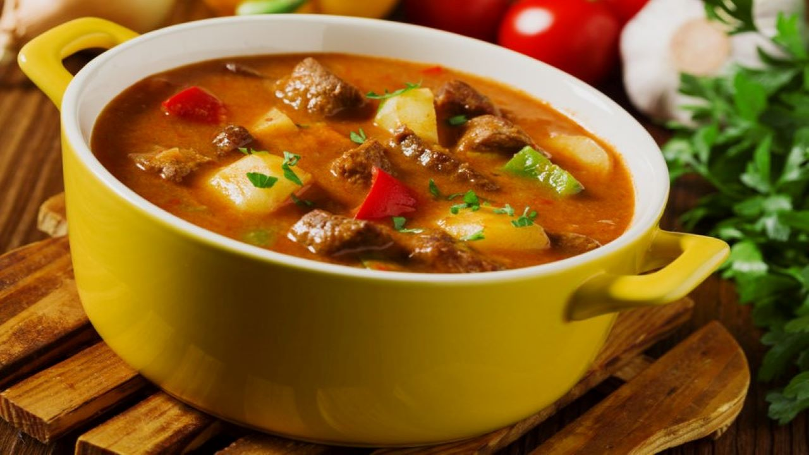

Goulash

Description
Hungarin goulash is a beef soup with a lot of pepper seasonong
and with a lot of spices.
Ingredients
- 3 tablespoon oil or lard
- 5 medium onions, diced
- 21/2 teaspons salt
- 21/2 liters of water
- 3 tablespoons of Hungarian minced Paprika (pepper, hot or mild)
- 1/2 tablespoons of black pepper
- 1 tablespoon caraway seeds
- 1.5 kg of beef, chopped into bite sized pieces
- 2 cloves of garlic, chopped
- 5 medium carrots, sliced into bite sized rounds
- 2 medium parsnips, sliced into bite sized rounds
- 2 large potatpes, cubed
- 2 tomatoes, diced
- pinched pasta, (optional)
Instructions
-
Heat the oil or lard in a large pot (preferably a Dutch oven). Add the onions along with a few spoonfuls
of water (so they don’t brown) and a pinch of the salt. Cook slowly over very low heat for about 15 to 20
minutes, or until the onions are clear and glassy.
-
Remove from the heat and add the paprika, pepper, and caraway seeds. Stir quickly to combine and
add a tiny bit of water (to prevent the paprika from burning).
-
Add the meat and garlic and cook over high heat, stirring, until the meat is slightly browned (about ten
minutes). Turn the heat down to low, add a few spoonfuls of water, and cook for about 15 more minutes,
until the meat is nearly cooked through.
-
Add the rest of the water and keep cooking, over low heat, for at least an hour, or until the meat is
cooked and nearly tender enough to serve. This could take hours, depending on the cut of beef you
used.
-
When the meat is nearly done, add the tomatoes, carrots, parsnips, and potatoes and cook for about 15
more minutes, or until they are tender (being careful not to overcook them). Taste the soup and add
more salt and pepper, if needed.
-
If you are using csipetke or another kind of small pasta, add it to the soup before serving. You can serve
this soup with hot pepper or hot pepper paste.
Back to the main page